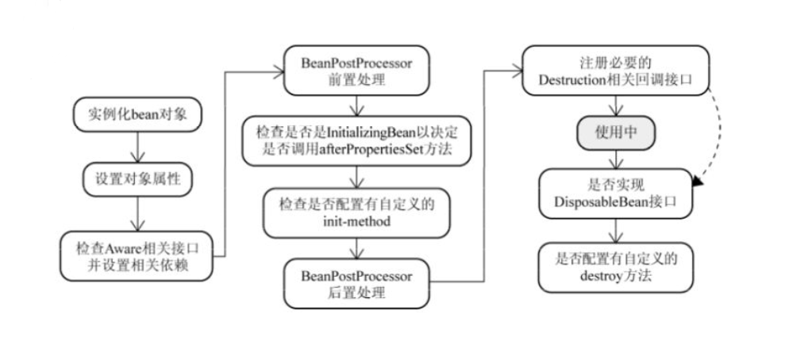
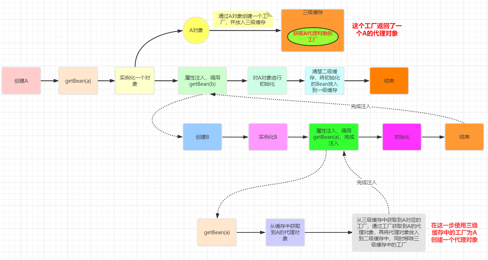

Spring
Spring框架由Rod Johnson开发，2004年发布了Spring框架的第一版。Spring是一个从实际开发中抽取出来的框架，因此它完成了大量开发中的通用步骤，留给开发者的仅仅是与特定应用相关的部分，从而大大提高了企业应用的开发效率。
Spring总结起来优点如下：
- 低侵入式设计，代码的污染极低。
- 独立于各种应用服务器，基于Spring框架的应用，可以真正实现Write Once，Run Anywhere的承诺。
- Spring的IoC容器降低了业务对象替换的复杂性，提高了组件之间的解耦。
- Spring的AOP支持允许将一些通用任务如安全、事务、日志等进行集中式管理，从而提供了更好的复用。
- Spring的ORM和DAO提供了与第三方持久层框架的良好整合，并简化了底层的数据库访问。
- Spring的高度开放性，并不强制应用完全依赖于Spring，开发者可自由选用Spring框架的部分或全部。
Spring 核心组件


Spring—七大核心模块
核心容器（Spring Core）
核心容器提供Spring框架的基本功能。Spring以bean的方式组织和管理Java应用中的各个组件及其关系。Spring使用BeanFactory来产生和管理Bean，它是工厂模式的实现。BeanFactory使用控制反转(IoC)模式将应用的配置和依赖性规范与实际的应用程序代码分开。
应用上下文（Spring Context）
Spring上下文是一个配置文件，向Spring框架提供上下文信息。Spring上下文包括企业服务，如JNDI、EJB、电子邮件、国际化、校验和调度功能。
Spring面向切面编程（Spring AOP）
通过配置管理特性，Spring AOP 模块直接将面向方面的编程功能集成到了 Spring框架中。所以，可以很容易地使 Spring框架管理的任何对象支持 AOP。Spring AOP 模块为基于 Spring 的应用程序中的对象提供了事务管理服务。通过使用 Spring AOP，不用依赖 EJB 组件，就可以将声明性事务管理集成到应用程序中。
JDBC和DAO模块（Spring DAO）
JDBC、DAO的抽象层提供了有意义的异常层次结构，可用该结构来管理异常处理，和不同数据库供应商所抛出的错误信息。异常层次结构简化了错误处理，并且极大的降低了需要编写的代码数量，比如打开和关闭链接。
对象实体映射（Spring ORM）
Spring框架插入了若干个ORM框架，从而提供了ORM对象的关系工具，其中包括了Hibernate、JDO和 IBatis SQL Map等，所有这些都遵从Spring的通用事物和DAO异常层次结构。
Web模块（Spring Web）
Web上下文模块建立在应用程序上下文模块之上，为基于web的应用程序提供了上下文。所以Spring框架支持与Struts集成，web模块还简化了处理多部分请求以及将请求参数绑定到域对象的工作。
MVC模块（Spring Web MVC）
MVC框架是一个全功能的构建Web应用程序的MVC实现。通过策略接口，MVC框架变成为高度可配置的。MVC容纳了大量视图技术，其中包括JSP、POI等，模型来有JavaBean来构成，存放于m当中，而视图是一个街口，负责实现模型，控制器表示逻辑代码，由c的事情。Spring框架的功能可以用在任何J2EE服务器当中，大多数功能也适用于不受管理的环境。Spring的核心要点就是支持不绑定到特定J2EE服务的可重用业务和数据的访问的对象，毫无疑问这样的对象可以在不同的J2EE环境，独立应用程序和测试环境之间重用。
Spring的核心机制
管理Bean

程序主要是通过Spring容器来访问容器中的Bean，ApplicationContext是Spring容器最常用的接口，该接口有如下两个实现类：
- ClassPathXmlApplicationContext: 从类加载路径下搜索配置文件，并根据配置文件来创建Spring容器。
- FileSystemXmlApplicationContext: 从文件系统的相对路径或绝对路径下去搜索配置文件，并根据配置文件来创建Spring容器。
ApplicationContext ctx = new ClassPathXmlApplicationContext("beans.xml");
Person p = ctx.getBean("person", Person.class);
p.say();
依赖注入 DI （Dependency Injection）
Spring框架的核心功能有两个：
- Spring容器作为超级大工厂，负责创建、管理所有的Java对象，这些Java对象被称为Bean。
- Spring容器管理容器中Bean之间的依赖关系，Spring使用一种被称为”依赖注入 DI”的方式来管理Bean之间的依赖关系。
使用依赖注入，不仅可以为Bean注入普通的属性值，还可以注入其他Bean的引用。依赖注入是一种优秀的解耦方式，其可以让Bean以配置文件组织在一起，而不是以硬编码的方式耦合在一起。
理解依赖注入
Rod Johnson是第一个高度重视以配置文件来管理Java实例的协作关系的人，他给这种方式起了一个名字：控制反转（Inverse of Control，IoC）。后来Martine Fowler为这种方式起了另一个名称：依赖注入（Dependency Injection），因此不管是依赖注入，还是控制反转，其含义完全相同。当某个Java对象（调用者）需要调用另一个Java对象（被依赖对象）的方法时，在传统模式下通常有两种做法：
- 原始做法: 调用者主动创建被依赖对象，然后再调用被依赖对象的方法。
- 简单工厂模式: 调用者先找到被依赖对象的工厂，然后主动通过工厂去获取被依赖对象，最后再调用被依赖对象的方法。
注意上面的主动二字，这必然会导致调用者与被依赖对象实现类的硬编码耦合，非常不利于项目升级的维护。使用Spring框架之后，调用者无需主动获取被依赖对象，调用者只要被动接受Spring容器为调用者的成员变量赋值即可，由此可见，使用Spring后，调用者获取被依赖对象的方式由原来的主动获取，变成了被动接受——所以Rod Johnson称之为控制反转。
另外从Spring容器的角度来看，Spring容器负责将被依赖对象赋值给调用者的成员变量——相当于为调用者注入它依赖的实例，因此Martine Fowler称之为依赖注入。
依赖注入两种方式
设值注入:
设值注入是指IoC容器通过成员变量的setter方法来注入被依赖对象。这种注入方式简单、直观，因而在Spring的依赖注入里大量使用。构造注入:
利用构造器来设置依赖关系的方式，被称为构造注入。通俗来说，就是驱动Spring在底层以反射方式执行带指定参数的构造器，当执行带参数的构造器时，就可利用构造器参数对成员变量执行初始化——这就是构造注入的本质。
两种注入方式的对比
- 设值注入有如下优点：
与传统的JavaBean的写法更相似，程序开发人员更容易理解、接受。通过setter方法设定依赖关系显得更加直观、自然。对于复杂的依赖关系，如果采用构造注入，会导致构造器过于臃肿，难以阅读。Spring在创建Bean实例时，需要同时实例化其依赖的全部实例，因而导致性能下降。而使用设值注入，则能避免这些问题。尤其在某些成员变量可选的情况下，多参数的构造器更加笨重。
- 构造注入优势如下：
构造注入可以在构造器中决定依赖关系的注入顺序，优先依赖的优先注入。对于依赖关系无需变化的Bean，构造注入更有用处。因为没有setter方法，所有的依赖关系全部在构造器内设定，无须担心后续的代码对依赖关系产生破坏。依赖关系只能在构造器中设定，则只有组件的创建者才能改变组件的依赖关系，对组件的调用者而言，组件内部的依赖关系完全透明，更符合高内聚的原则。
建议采用设值注入为主，构造注入为辅的注入策略。对于依赖关系无须变化的注入，尽量采用构造注入；而其他依赖关系的注入，则考虑采用设值注入。
Spring容器中的Bean
对于开发者来说，开发者使用Spring框架主要是做两件事：①开发Bean；②配置Bean。对于Spring框架来说，它要做的就是根据配置文件来创建Bean实例，并调用Bean实例的方法完成”依赖注入”——这就是所谓IoC的本质。
容器中Bean的作用域
当通过Spring容器创建一个Bean实例时，不仅可以完成Bean实例的实例化，还可以为Bean指定特定的作用域。Spring支持如下五种作用域：
- singleton: 单例模式，在整个Spring IoC容器中，singleton作用域的Bean将只生成一个实例。
- prototype: 每次通过容器的getBean()方法获取prototype作用域的Bean时，都将产生一个新的Bean实例。
- request: 对于一次HTTP请求，request作用域的Bean将只生成一个实例，这意味着，在同一次HTTP请求内，程序每次请求该Bean，得到的总是同一个实例。只有在Web应用中使用Spring时，该作用域才真正有效。
- session：该作用域将 bean 的定义限制为 HTTP 会话。 只在web-aware Spring ApplicationContext的上下文中有效。
- global session: 每个全局的HTTP Session对应一个Bean实例。在典型的情况下，仅在使用portlet context的时候有效，同样只在Web应用中有效。
如果不指定Bean的作用域，Spring默认使用singleton作用域。prototype作用域的Bean的创建、销毁代价比较大。而singleton作用域的Bean实例一旦创建成果，就可以重复使用。因此，应该尽量避免将Bean设置成prototype作用域。
使用自动装配注入合作者Bean
Spring能自动装配Bean与Bean之间的依赖关系，即无须使用ref显式指定依赖Bean，而是由Spring容器检查XML配置文件内容，根据某种规则，为调用者Bean注入被依赖的Bean。
Spring自动装配可通过
autowire和default-autowire可以接受如下值：
- no: 不使用自动装配。Bean依赖必须通过ref元素定义。这是默认配置，在较大的部署环境中不鼓励改变这个配置，显式配置合作者能够得到更清晰的依赖关系。
- byName: 根据setter方法名进行自动装配。Spring容器查找容器中全部Bean，找出其id与setter方法名去掉set前缀，并小写首字母后同名的Bean来完成注入。如果没有找到匹配的Bean实例，则Spring不会进行任何注入。
- byType: 根据setter方法的形参类型来自动装配。Spring容器查找容器中的全部Bean，如果正好有一个Bean类型与setter方法的形参类型匹配，就自动注入这个Bean；如果找到多个这样的Bean，就抛出一个异常；如果没有找到这样的Bean，则什么都不会发生，setter方法不会被调用。
- constructor: 与byType类似，区别是用于自动匹配构造器的参数。如果容器不能恰好找到一个与构造器参数类型匹配的Bean，则会抛出一个异常。
- autodetect: Spring容器根据Bean内部结构，自行决定使用constructor或byType策略。如果找到一个默认的构造函数，那么就会应用byType策略。
当一个Bean既使用自动装配依赖，又使用ref显式指定依赖时，则显式指定的依赖覆盖自动装配依赖；对于大型的应用，不鼓励使用自动装配。虽然使用自动装配可减少配置文件的工作量，但大大限制死了依赖关系的清晰性和透明性。依赖关系的装配依赖于源文件的属性名和属性类型，导致Bean与Bean之间的耦合降低到代码层次，不利于高层次解耦。
<!--通过设置可以将Bean排除在自动装配之外-->
<bean id="" autowire-candidate="false"/>
<!--除此之外，还可以在beans元素中指定，支持模式字符串，如下所有以abc结尾的Bean都被排除在自动装配之外-->
<beans default-autowire-candidates="*abc"/>
创建Bean的3种方式
使用构造器创建Bean实例
使用构造器来创建Bean实例是最常见的情况，如果不采用构造注入，Spring底层会调用Bean类的无参数构造器来创建实例，因此要求该Bean类提供无参数的构造器。
采用默认的构造器创建Bean实例，Spring对Bean实例的所有属性执行默认初始化，即所有的基本类型的值初始化为0或false；所有的引用类型的值初始化为null。
使用静态工厂方法创建Bean
使用静态工厂方法创建Bean实例时，class属性也必须指定，但此时class属性并不是指定Bean实例的实现类，而是静态工厂类，Spring通过该属性知道由哪个工厂类来创建Bean实例。
除此之外，还需要使用factory-method属性来指定静态工厂方法，Spring将调用静态工厂方法返回一个Bean实例，一旦获得了指定Bean实例，Spring后面的处理步骤与采用普通方法创建Bean实例完全一样。如果静态工厂方法需要参数，则使用<constructor-arg…/>元素指定静态工厂方法的参数。
调用实例工厂方法创建Bean
实例工厂方法与静态工厂方法只有一个不同：调用静态工厂方法只需使用工厂类即可，而调用实例工厂方法则需要工厂实例。使用实例工厂方法时，配置Bean实例的<bean…/>元素无须class属性，配置实例工厂方法使用factory-bean指定工厂实例。
采用实例工厂方法创建Bean的<bean…/>元素时需要指定如下两个属性：
- factory-bean: 该属性的值为工厂Bean的id。
- factory-method: 该属性指定实例工厂的工厂方法。
若调用实例工厂方法时需要传入参数，则使用<constructor-arg…/>元素确定参数值。
协调作用域不同步的Bean
当singleton作用域的Bean依赖于prototype作用域的Bean时，会产生不同步的现象，原因是因为当Spring容器初始化时，容器会预初始化容器中所有的singleton Bean，由于singleton Bean依赖于prototype Bean，因此Spring在初始化singleton Bean之前，会先创建prototypeBean——然后才创建singleton Bean，接下里将prototype Bean注入singleton Bean。
解决不同步的方法有两种：
- 放弃依赖注入: singleton作用域的Bean每次需要prototype作用域的Bean时，主动向容器请求新的Bean实例，即可保证每次注入的prototype Bean实例都是最新的实例。
- 利用方法注入: 方法注入通常使用lookup方法注入，使用lookup方法注入可以让Spring容器重写容器中Bean的抽象或具体方法，返回查找容器中其他Bean的结果，被查找的Bean通常是一个non-singleton Bean。Spring通过使用JDK动态代理或cglib库修改客户端的二进制码，从而实现上述要求。
建议采用第二种方法，使用方法注入。为了使用lookup方法注入，大致需要如下两步：
- 将调用者Bean的实现类定义为抽象类，并定义一个抽象方法来获取被依赖的Bean。
- 在<bean…/>元素中添加<lookup-method…/>子元素让Spring为调用者Bean的实现类实现指定的抽象方法
Spring会采用运行时动态增强的方式来实现<lookup-method…/>元素所指定的抽象方法，如果目标抽象类实现过接口，Spring会采用JDK动态代理来实现该抽象类，并为之实现抽象方法；如果目标抽象类没有实现过接口，Spring会采用cglib实现该抽象类，并为之实现抽象方法。Spring4.0的spring-core-xxx.jar包中已经集成了cglib类库。
两种后处理器
Spring提供了两种常用的后处理器：
- Bean后处理器: 这种后处理器会对容器中Bean进行后处理，对Bean进行额外加强。
- 容器后处理器: 这种后处理器会对IoC容器进行后处理，用于增强容器功能。
Bean后处理器 (BeanPostProcessor)
Bean后处理器是一种特殊的Bean，这种特殊的Bean并不对外提供服务，它甚至可以无须id属性，它主要负责对容器中的其他Bean执行后处理，例如为容器中的目标Bean生成代理等，这种Bean称为Bean后处理器。Bean后处理器会在Bean实例创建成功之后，对Bean实例进行进一步的增强处理。Bean后处理器必须实现BeanPostProcessor接口，同时必须实现该接口的两个方法。
- Object postProcessBeforeInitialization(Object bean, String name) throws BeansException: 该方法的第一个参数是系统即将进行后处理的Bean实例，第二个参数是该Bean的配置id
- Object postProcessAfterinitialization(Object bean, String name) throws BeansException: 该方法的第一个参数是系统即将进行后处理的Bean实例，第二个参数是该Bean的配置id
容器中一旦注册了Bean后处理器，Bean后处理器就会自动启动，在容器中每个Bean创建时自动工作，Bean后处理器两个方法的回调时机如下图：


如果使用BeanFactory作为Spring容器，则必须手动注册Bean后处理器，程序必须获取Bean后处理器实例，然后手动注册。
BeanPostProcessor bp = (BeanPostProcessor)beanFactory.getBean("bp");
beanFactory.addBeanPostProcessor(bp);
Person p = (Person)beanFactory.getBean("person");容器后处理器
Bean后处理器负责处理容器中的所有Bean实例，而容器后处理器则负责处理容器本身。容器后处理器必须实现BeanFactoryPostProcessor接口，并实现该接口的一个方法postProcessBeanFactory(ConfigurableListableBeanFactory beanFactory)实现该方法的方法体就是对Spring容器进行的处理，这种处理可以对Spring容器进行自定义扩展，当然也可以对Spring容器不进行任何处理。
类似于BeanPostProcessor，ApplicationContext可自动检测到容器中的容器后处理器，并且自动注册容器后处理器。但若使用BeanFactory作为Spring容器，则必须手动调用该容器后处理器来处理BeanFactory容器。
Spring的AOP

为什么需要AOP
AOP（Aspect Orient Programming）也就是面向切面编程，作为面向对象编程的一种补充，已经成为一种比较成熟的编程方式。其实AOP问世的时间并不太长，AOP和OOP互为补充，面向切面编程将程序运行过程分解成各个切面。
AOP专门用于处理系统中分布于各个模块（不同方法）中的交叉关注点的问题，在JavaEE应用中，常常通过AOP来处理一些具有横切性质的系统级服务，如事务管理、安全检查、缓存、对象池管理等，AOP已经成为一种非常常用的解决方案。
使用AspectJ实现AOP
AspectJ是一个基于Java语言的AOP框架，提供了强大的AOP功能，其他很多AOP框架都借鉴或采纳其中的一些思想。其主要包括两个部分：一个部分定义了如何表达、定义AOP编程中的语法规范，通过这套语法规范，可以方便地用AOP来解决Java语言中存在的交叉关注点的问题；另一个部分是工具部分，包括编译、调试工具等。
AOP实现可分为两类：
- 静态AOP实现: AOP框架在编译阶段对程序进行修改，即实现对目标类的增强，生成静态的AOP代理类，以AspectJ为代表。
- 动态AOP实现: AOP框架在运行阶段动态生成AOP代理，以实现对目标对象的增强，以Spring AOP为代表。
一般来说，静态AOP实现具有较好的性能，但需要使用特殊的编译器。动态AOP实现是纯Java实现，因此无须特殊的编译器，但是通常性能略差。
AOP的基本概念
关于面向切面编程的一些术语：
- 切面（Aspect）: 切面用于组织多个Advice，Advice放在切面中定义。
- 连接点（Joinpoint）: 程序执行过程中明确的点，如方法的调用，或者异常的抛出。在Spring AOP中，连接点总是方法的调用。
- 增强处理（Advice）: AOP框架在特定的切入点执行的增强处理。处理有”around”、”before”和”after”等类型
- 切入点（Pointcut）: 可以插入增强处理的连接点。简而言之，当某个连接点满足指定要求时，该连接点将被添加增强处理，该连接点也就变成了切入点。
Spring的AOP支持
Spring中的AOP代理由Spring的IoC容器负责生成、管理，其依赖关系也由IoC容器负责管理。为了在应用中使用@AspectJ支持，Spring需要添加三个库：
- aspectjweaver.jar
- aspectjrt.jar
- aopalliance.jar
并在Spring配置文件中做如下配置：
<!--启动@AspectJ支持-->
<aop:aspectj-autoproxy/>
<!--指定自动搜索Bean组件、自动搜索切面类-->
<context:component-scan base-package="edu.shu.sprint.service">
<context:include-filter type="annotation" expression="org.aspectj.lang.annotation.Aspect"/>
</context:component-scan>
Spring注解开发
标注Spring Bean
- @Component: 标注一个普通的Spring Bean类
- @Controller: 标注一个控制器组件类
- @Service: 标注一个业务逻辑组件类
- @Repository: 标注一个DAO组件类
在Spring配置文件中做如下配置，指定自动扫描的包：
<context:component-scan base-package="edu.shu.spring.domain"/>使用@Resource配置依赖
@Resource位于javax.annotation包下，是来自JavaEE规范的一个Annotation，Spring直接借鉴了该Annotation，通过使用该Annotation为目标Bean指定协作者Bean。使用@Resource与<property…/>元素的ref属性有相同的效果。
@Resource不仅可以修饰setter方法，也可以直接修饰实例变量，如果使用@Resource修饰实例变量将会更加简单，此时Spring将会直接使用JavaEE规范的Field注入，此时连setter方法都可以不要。
@Resource(name="bucket")
private String bucketName;
@Resource(name="style")
private String styleName;<bean name="bucket" class="java.lang.String">
<constructor-arg value="${oos.bucketName}"/>
</bean>
<!-- 图片样式名 -->
<bean name="style" class="java.lang.String">
<constructor-arg value="${oos.styleName}"/>
</bean>使用@PostConstruct和@PreDestroy定制生命周期行为
@PostConstruct和@PreDestroy同样位于javax.annotation包下，也是来自JavaEE规范的两个Annotation，Spring直接借鉴了它们，用于定制Spring容器中Bean的生命周期行为。它们都用于修饰方法，无须任何属性。其中前者修饰的方法时Bean的初始化方法；而后者修饰的方法时Bean销毁之前的方法。
Spring4.0增强的自动装配和精确装配
Spring提供了@Autowired注解来指定自动装配，@Autowired可以修饰setter方法、普通方法、实例变量和构造器等。当使用@Autowired标注setter方法时，默认采用byType自动装配策略。在这种策略下，符合自动装配类型的候选Bean实例常常有多个，这个时候就可能引起异常，为了实现精确的自动装配，Spring提供了@Qualifier注解，通过使用@Qualifier，允许根据Bean的id来执行自动装配。
1. 配置如图

2. 注解分类
| 相当于创建对象的 |
用于注入数据的 |
用于改变作用范围的（scope） | 用于改变生命周期的（init函数和destroy函数的） |
|---|---|---|---|
| @Compoent | @Autowired | @Scope | @PreDestroy |
| @Service | @Resource | @PostConstruct | |
| @Controller | @Qualifier | ||
| @Repostory | @Value(“${数据}”) |
想要用注解，必须添加注解包和开启注解扫描 <context:component-scan base-package=”com.njau.account”/>
注意：@Autowired只能按照数据类型自动注入，@Qualifier不能单独使用，@Reseource可以任意注入（不同与前两个，这个属性用 name=”id”）。–》》》但是，这是那种数据注入都只能注入复杂数据类型，对简单数据类型无法注入 ，对简单数据只能用@value(“${数据}”)的方式注入！
3. 配置类（spring新注解）
| 注解名称 | 注解作用/注解注意事项 | 例子 |
|---|---|---|
| @Configuratiuon | 这是一个配置内（当注解是spring主配置的时候可以省略） | |
| @ComponentScan | 组件扫描（开启注解，扫描注解的包） | |
| @Bean | 将方法返回值作为Bea放入到容器中，name相当于id，如果没有，默认是方法名 | |
| @Scop | 控制作用范围，多例还是单例（默认是单例，数据库或取得连接要用多例） | |
| @Import | 向主配置类中导入其他配置，相当于@ComponentScan(basePackages = {“com.njau”,”config“}) | |
| @PropertySource | 指定properties文件的位置并将数据放入到容器中，取得时候要用@value的方式取（要加classpath指在类路径下）（一般在主配置文件中加这个注解说明properties文件位置） |  |
注意：如果是自己写的类，直接用全部注解开发简单，如果是jar包或者是别人的类，则xml比较省事
4. 整合Junit
| 注解名称 | 注解作用/注解注意事项 | 例子 |
|---|---|---|
| @RunWith | 替换Junit中的main方法，让其能有ioc容器 | @RunWith(SpringJUnit4ClassRunner.class) |
| @ContextConfiguration | 告知Junit配置位置和方式（@ContextConfiguration(classes =。。。。是注解类配置）（@ContextConfiguration(locations =…是xml配置） | @ContextConfiguration(classes = SpringConfiguration.class) |
注意：在使用spring5 的时候，Junit的版本必须是4.12以上版本！
AOP(面向切面编程 aspect oriented programming)
简单的说它就是把我们程序重复的代码抽取出来，在需要执行的时候，使用动态代理的技术，在不修改源码的基础上，对我们的已有方法进行增强 。
在spring中主要用动态代理的方法将代码中大量重复的代码抽取出来聚合在一起（类），即横向抽取
1. spring中AOP的配置（基于xml）
| 步骤 | 例子 |
|---|---|
| 1.导入aop名称空间 | |
| 2.将要被通知的类（增强的类）配置静ioc中 | |
| 3.将通知类交给spring管理 | |
| 一下是配置AOP | |
| 4. aop:config标明开始配置AOP | |
| 5.<aop:aspect配置切面（id ：为切面指定一个唯一标示，ref ： 指定通知bean的id） | |
| 6. <aop:befor 配置通知顺序和位置（method 通知需要执行的方法， pointcut 切入点表达式，标明对那个方法增强） | |
| 7.pointcut切入点表达式的写法：pointcut（“execution（表达式）”） | |
| 8. 表达式： | |
| a. 访问修饰符 返回值 包名.包名.包名.类名.方法名 (也就是写类方法的方式，只是加上了具体的包名和类名) 如：pointcut=”execution(public void com.njau.account.service.impl.AccourceServiceImpl.saveMoney()) | |
b.访问修饰符可以省略,其他报名和类名均可用通配符代替，包名及其子包名可以用 *.. 的方式来实现通配，如： |
|
c.访问修饰符可以省略,全通配写法： |
|
d. 开发中一般写法是写到业务层实现类的所有方法： |
|
| 9.切入点一般配置在切面之前 | |
| 10.环绕通知： | |
完整配置 1 如下：
<?xml version="1.0" encoding="UTF-8"?>
<beans xmlns="http://www.springframework.org/schema/beans"
xmlns:xsi="http://www.w3.org/2001/XMLSchema-instance"
xmlns:aop="http://www.springframework.org/schema/aop"
xsi:schemaLocation="http://www.springframework.org/schema/beans
https://www.springframework.org/schema/beans/spring-beans.xsd
http://www.springframework.org/schema/aop
https://www.springframework.org/schema/aop/spring-aop.xsd">
<bean class="com.njau.account.service.impl.AccourceServiceImpl" id="accourceService">
</bean>
<bean class="com.njau.account.utils.Logger" id="logger">
</bean>
<!--开始配置AOP-->
<aop:config>
<!--指定切面，即那个通知-->
<aop:aspect id="logger" ref="logger">
<aop:pointcut id="as" expression="execution(* com.njau.account.service.impl.*.*(..))"></aop:pointcut>
<!--将上述切面与切入点进行关联，即指定那个方法是增强的类，那个方法是被怎强的类-->
<!--<aop:before method="printLog" pointcut="execution(public void com.njau.account.service.impl.AccourceServiceImpl.saveMoney())"></aop:before>-->
<!--访问修饰符可以省略 -->
<!--<aop:before method="printLog" pointcut="execution(* *..*.*(..))"></aop:before>-->
<!--前置通知-->
<aop:before method="before" pointcut-ref="as"></aop:before>
<!--後置通知-->
<aop:after-returning method="after" pointcut-ref="as"></aop:after-returning>
<!--異常通知-->
<aop:after-throwing method="exception" pointcut-ref="as"></aop:after-throwing>
<!--最終通知-->
<aop:after method="finall" pointcut-ref="as"></aop:after>
</aop:aspect>
</aop:config>
</beans>
完整配置 2 如下：（环绕通知）
/**
* 环绕通知
*
* @param joinPoint 在spring中通过ProceedingJoinPoint接口的proceed()得到切入点方法
* @return
*/
public Object around(ProceedingJoinPoint joinPoint) {
Object[] args = joinPoint.getArgs();
Object proceed = null;
try {
System.out.println("环绕通知-------前置通知---------end");
/**
* 切点方法执行（proceed(args)相当于当前切点的方法）
*/
proceed = joinPoint.proceed(args);
System.out.println("环绕通知-------后置通知---------1end");
return proceed;
} catch (Throwable e) {
System.out.println("环绕通知-------异常通知---------end");
throw new RuntimeException(e);
} finally {
System.out.println("环绕通知-------最终通知---------end");
}
}2.spring中AOP的配置（基于配置）
- 步骤
- 添加Context和AOP名称空间
- 开启注解扫描
- 开启aop注解扫描
- 将通知类和切点类都交给spring管理
- 添加注解@Aspect表是是一个切面类
- 注解
| 注解 | 作用 | 实例 |
|---|---|---|
| @Aspect | 表示该类是一个切面类 | |
| @Pointcut | 切入点表达式 | |
| @Before(“表达式名”) | 前 | |
| @AfterReturning(“表达式名”) | 后 | |
| @AfterThrowing(“表达式名”) | 异常 | |
| @After(“表达式名”) | 最终 | |
| @Around(“表达式名”) | 环绕 |
- spring配置（xml）
<?xml version="1.0" encoding="UTF-8"?>
<beans xmlns="http://www.springframework.org/schema/beans"
xmlns:xsi="http://www.w3.org/2001/XMLSchema-instance"
xmlns:aop="http://www.springframework.org/schema/aop"
xmlns:context="http://www.springframework.org/schema/context"
xsi:schemaLocation="http://www.springframework.org/schema/beans
https://www.springframework.org/schema/beans/spring-beans.xsd
http://www.springframework.org/schema/aop
https://www.springframework.org/schema/aop/spring-aop.xsd
http://www.springframework.org/schema/context
https://www.springframework.org/schema/context/spring-context.xsd">
<!--开启注解扫描-->
<context:component-scan base-package="com.njau"/>
<!--开启AOP注解扫描-->
<aop:aspectj-autoproxy/>
</beans>
4.配置好的切面类
package com.njau.account.utils;
import org.aspectj.lang.ProceedingJoinPoint;
import org.aspectj.lang.annotation.*;
import org.springframework.stereotype.Component;
/**
* @author 张文军
* @Description:模拟日志记录（切面类）
* @Company:南京农业大学工学院
* @version:1.0
* @date 2019/7/1621:12
*/
@Component("logger")
@Aspect
public class Logger {
/**
* 切入点表达式
*/
@Pointcut("execution(* com.njau.account.service.impl.*.*(..))")
public void as() {
}
@Before("as()")
public void before() {
System.out.println("before记录日志！----11111");
}
@AfterReturning("as()")
public void after() {
System.out.println("after记录日志！----22222");
}
@AfterThrowing("as()")
public void exception() {
System.out.println("exception记录日志！----33333");
}
@After("as()")
public void finall() {
System.out.println("finall记录日志！44444");
}
/**
* 环绕通知
*
* @param joinPoint 在spring中通过ProceedingJoinPoint接口的proceed()得到切入点方法
* @return
*/
@Around("as()")
public Object around(ProceedingJoinPoint joinPoint) {
Object[] args = joinPoint.getArgs();
Object proceed = null;
try {
System.out.println("环绕通知-------前置通知---------end");
/**
* 切点方法执行（proceed(args)相当于当前切点的方法）
*/
proceed = joinPoint.proceed(args);
System.out.println("环绕通知-------后置通知---------1end");
return proceed;
} catch (Throwable e) {
System.out.println("环绕通知-------异常通知---------end");
throw new RuntimeException(e);
} finally {
System.out.println("环绕通知-------最终通知---------end");
}
}
}
注意：我发现最好用自己写的环绕通知，其他如果用spring提供的通知在执行顺序上有点诧异
JDBCTelplate
1. 步骤
得到数据源datasource（DriverManagerDataSource）
将数据源注入到jabcTemplate中
<?xml version="1.0" encoding="UTF-8"?>
<beans xmlns="http://www.springframework.org/schema/beans"
xmlns:xsi="http://www.w3.org/2001/XMLSchema-instance"
xsi:schemaLocation="http://www.springframework.org/schema/beans http://www.springframework.org/schema/beans/spring-beans.xsd">
<bean class="org.springframework.jdbc.core.JdbcTemplate" id="jdbcTemplate">
<property name="dataSource" ref="dataSource"/>
</bean>
<bean class="org.springframework.jdbc.datasource.DriverManagerDataSource" id="dataSource">
<property name="driverClassName" value="com.mysql.cj.jdbc.Driver"/>
<property name="url" value="jdbc:mysql://localhost:3306/test"/>
<property name="username" value="root"/>
<property name="password" value="root"/>
</bean>
</beans>2. 使用
| 方法语句 | 使用范围 | 例子 |
|---|---|---|
| update（“sql”,..args） | 没有返回值得都用此方法（即，增删改），差别只是在sql语句和参数上 | jdbcTemplate.update(“update account set name=?,money=? where id=?”, “文军”, 9001,15); |
| 下面是查询用query方法 | ||
| 查询类型 | 方法 | 实例 |
| 查询所有 | query(String sql, RowMapper |
//查询所有金额大于900的账户 List |
| 查询返回一行或一类（聚合但不用group by） | queryForObject(String sql, Class |
Long aLong = jdbcTemplate.queryForObject(“select count() from account where money > ?”, Long.class, 900f); |
Spring中的事务控制器
1. 概述
spring 框架为我们提供了一组事务控制的接口（PlatformTransactionManager ） ，这组接口是在spring-tx-5.0.2.RELEASE.jar 中。spring 的事务控制都是基于 AOP 的，它既可以使用编程的方式实现，也可以使用配置的方式实现 。
2. spring 中基于XML的声明式事务配置
步骤
- 配置事务管理器，注入datasource
- 配置事务通知（导入事物约束tx和aop）
- 配置AOP中的切入点表达式
- 配置切入点表达式和事务通知之间的关系
- 配置事务的属性（在事务通知里面配置）
配置如下
<?xml version="1.0" encoding="UTF-8"?>
<beans xmlns="http://www.springframework.org/schema/beans"
xmlns:xsi="http://www.w3.org/2001/XMLSchema-instance"
xmlns:aop="http://www.springframework.org/schema/aop"
xmlns:tx="http://www.springframework.org/schema/tx"
xsi:schemaLocation="
http://www.springframework.org/schema/beans
http://www.springframework.org/schema/beans/spring-beans.xsd
http://www.springframework.org/schema/tx
http://www.springframework.org/schema/tx/spring-tx.xsd
http://www.springframework.org/schema/aop
http://www.springframework.org/schema/aop/spring-aop.xsd">
<bean class="com.itheima.service.impl.IAccountServiceImpl" id="accountService">
<property name="IAccountDao" ref="accountDao"/>
</bean>
<!-- 配置账户的持久层-->
<bean id="accountDao" class="com.itheima.dao.impl.AccountDaoImpl">
<!--<property name="jdbcTemplate" ref="jdbcTemplate"></property>-->
<property name="dataSource" ref="dataSource"></property>
</bean>
<!-- 配置数据源-->
<bean id="dataSource" class="org.springframework.jdbc.datasource.DriverManagerDataSource">
<property name="driverClassName" value="com.mysql.cj.jdbc.Driver"></property>
<property name="url" value="jdbc:mysql://localhost:3306/test"></property>
<property name="username" value="root"></property>
<property name="password" value="root"></property>
</bean>
<!--配置事务管理器 -->
<bean class="org.springframework.jdbc.datasource.DataSourceTransactionManager" id="transactionManager">
<property name="dataSource" ref="dataSource"/>
</bean>
<!--配置事务源-->
<tx:advice transaction-manager="transactionManager" id="txAdvice">
<!--配置事务的属性-->
<tx:attributes>
<tx:method name="*" propagation="REQUIRED"/>
<tx:method name="find*" propagation="SUPPORTS" read-only="true"/>
</tx:attributes>
</tx:advice>
<!--配置AOP-->
<aop:config>
<!--配置AOP中的切入点表达式-->
<aop:pointcut id="pointcut" expression="execution(* com.itheima.service.impl.*.*(..))"/>
<!--配置切入点表达式和事务通知之间的关系-->
<aop:advisor advice-ref="txAdvice" pointcut-ref="pointcut"/>
</aop:config>
</beans>
3. spring 中基于注解的声明式事务配置
步骤
- 配置事务管理器
- 开启spring对注解事物的支持
- 在需要业务支持的地方加上@Transactional注解
配置如下：
<?xml version="1.0" encoding="UTF-8"?>
<beans xmlns="http://www.springframework.org/schema/beans"
xmlns:xsi="http://www.w3.org/2001/XMLSchema-instance"
xmlns:aop="http://www.springframework.org/schema/aop"
xmlns:tx="http://www.springframework.org/schema/tx"
xmlns:context="http://www.springframework.org/schema/context"
xsi:schemaLocation="
http://www.springframework.org/schema/beans
http://www.springframework.org/schema/beans/spring-beans.xsd
http://www.springframework.org/schema/tx
http://www.springframework.org/schema/tx/spring-tx.xsd
http://www.springframework.org/schema/aop
http://www.springframework.org/schema/aop/spring-aop.xsd
http://www.springframework.org/schema/context
http://www.springframework.org/schema/context/spring-context.xsd">
<context:component-scan base-package="com.itheima"/>
<bean class="org.springframework.jdbc.core.JdbcTemplate" id="jdbcTemplate">
<property name="dataSource" ref="dataSource"/>
</bean>
<!-- 配置数据源-->
<bean id="dataSource" class="org.springframework.jdbc.datasource.DriverManagerDataSource">
<property name="driverClassName" value="com.mysql.cj.jdbc.Driver"></property>
<property name="url" value="jdbc:mysql://localhost:3306/test"></property>
<property name="username" value="root"></property>
<property name="password" value="root"></property>
</bean>
<!--开启spring对注解事物的支持-->
<tx:annotation-driven transaction-manager="transactionManager"/>
<!--配置事务管理器 -->
<bean class="org.springframework.jdbc.datasource.DataSourceTransactionManager" id="transactionManager">
<property name="dataSource" ref="dataSource"/>
</bean>
</beans>Spring Bean 的生命周期
●Bean容器找到配置文件中Spring Bean的定义。
●Bean 容器利用Java Reflection API创建一个 Bean的实例。
●如果涉及到一些属性值利用set()方法设置一些属性值。
●如果Bean实现了BeanNameAware接口，调用setBeanName()方法，传入Bean的名字。
●如果Bean实现了BeanClassLoaderAware接口，调用setBeanClassLoader()方法，传入ClassLoader对象的实例。
●与上面的类似，如果实现了其他 *. Aware接口，就调用相应的方法。
●如果有和加载这个Bean的Spring容器相关的BeanPostProcessor对象，执行postProcessBeforeInitialization()方法
●如果Bean实现了InitializingBean接口， 执行afterPropertiesSet()方法。
●如果Bean在配置文件中的定义包含init-method属性，执行指定的方法。
●如果有和加载这个Bean的Spring容器相关的BeanPostProcessor对象，执行postProcessAfterInitialization()方法
●当要销毁Bean的时候，如果Bean实现了DisposableBean接口，执行destroy()方法。
●当要销毁Bean的时候，如果Bean在配置文件中的定义包含destroy-method属性，执行指定的方法。


Spring是如何解决的循环依赖？
Spring通过三级缓存解决了循环依赖，其中一级缓存为单例池（singletonObjects）,二级缓存为早期曝光对象earlySingletonObjects，三级缓存为早期曝光对象工厂（singletonFactories）。当A、B两个类发生循环引用时，在A完成实例化后，就使用实例化后的对象去创建一个对象工厂，并添加到三级缓存中，如果A被AOP代理，那么通过这个工厂获取到的就是A代理后的对象，如果A没有被AOP代理，那么这个工厂获取到的就是A实例化的对象。当A进行属性注入时，会去创建B，同时B又依赖了A，所以创建B的同时又会去调用getBean(a)来获取需要的依赖，此时的getBean(a)会从缓存中获取，第一步，先获取到三级缓存中的工厂；第二步，调用对象工工厂的getObject方法来获取到对应的对象，得到这个对象后将其注入到B中。紧接着B会走完它的生命周期流程，包括初始化、后置处理器等。当B创建完后，会将B再注入到A中，此时A再完成它的整个生命周期。至此，循环依赖结束！

为什么要使用三级缓存呢？二级缓存能解决循环依赖吗？
如果要使用二级缓存解决循环依赖，意味着所有Bean在实例化后就要完成AOP代理，这样违背了Spring设计的原则，Spring在设计之初就是通过AnnotationAwareAspectJAutoProxyCreator这个后置处理器来在Bean生命周期的最后一步来完成AOP代理，而不是在实例化后就立马进行AOP代理。
常用状态码
200OK:正常返回信息
400 Bad Request:客户端请求有语法错误，不能被服务器所理解
401 Unauthorized:请求未经授权，这个状态代码必须和WWW-Authenticate报头域一起使用
403 Forbidden:服务器收到请求，但是拒绝提供服务
404 Not Found:请求资源不存在，eg，输入了错误的URL500 Internal Server Error:服务器发生不可预期的错误
503 Server Unavailable:服务器当前不能处理客户端的请求,一段时间后可能恢复正常